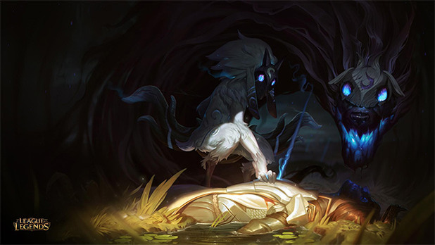

This course of Computer Science was definitely a road I would walk along again. There was a large amount of obstacles I had to surpass but it was these obstacles that made the class a worthy adventure. The satisfaction of finally understanding the content, and being able to use it for actual projects and work was quite great. The class overall has definitely made me continue to want to pursue the path of Computer Science as it is something completely foreign to me, and the thought of learning how to use it to it's fullest potential motivates me even further to try my best to understand it. I will continue to learn new forms of computer science and hope to one day understand it all as one day it could benefit me to even create my own videogame, or work on a improving a video games coding such as League of Legends.
